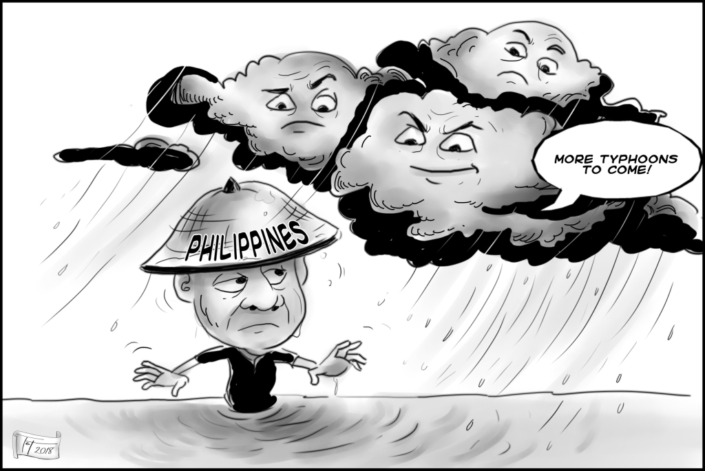

|
|---|
such as television and radio news. It relies on quick reporting, direct communication with the audience, and uses video, sound, and live elements to convey information. If you want to be on the spotlight, presenting yourself in front, know how to speak with the audience, and delivering, Broadcasting Journalism might just be the right choice. |
 |
|---|
It emphasizes text and images, allows for more in-depth analysis, and is typically consumed at the reader’s own pace. Do you love writing? Is it your hobby? Your way of informatives? With Print Journalism, we have just the case for you! |
The differences of Print & Broadcast Journalism:
Broadcast Journalism is more of a live presentation, while Print Journalism is more of a written form. |
Broadcast Journalism focuses on audio-visual elements, while Print Journalism emphasizes text and images. |
Broadcast Journalism often requires quick reporting, while Print Journalism allows for more in-depth analysis. |
In summary: Print journalism: written, detailed, text/image-based, slower pace.
Broadcast journalism: live or recorded, audio-visual, fast-paced, direct audience engagement.
What we do in Journalism:
Radio Broadcasting is the transmission of audio content—such as:
|
Television Broadcasting, on the other hand, delivers both audio and visual content to viewers through TV signals.
|
News Writing is the process of reporting current events, providing |
Feature Writing focuses on in-depth storytelling, exploring human interest stories, and providing a more narrative-driven approach to journalism. |
Column Writing involves expressing personal opinions, analysis, or commentary on various topics, often in a regular column format. |
|  | ||
Photojournalism is a form of journalism that uses images to tell a news story. It aims to present facts and provide a picture of reality to inform the public. This impactful form of news reporting conveys stories and objective truth through compelling photographs, making it a critical medium for educating and informing citizens. |
Sports journalism is a form of writing that reports on matters pertaining to sporting topics and competitions. Sports journalists rely on photographs of key action shots of games (such as this photo of an ice hockey goal being scored) to bring visual imagery to their audience while reporting on sports stories. |
Editorial Cartooning involves creating illustrations or cartoons that comment on current events, social issues, or political topics. These cartoons use humor, satire, and symbolism to express opinions, provoke thought, and spark discussion. Editorial cartoonists play an important role in journalism by visually communicating ideas and perspectives in a creative and impactful way. |